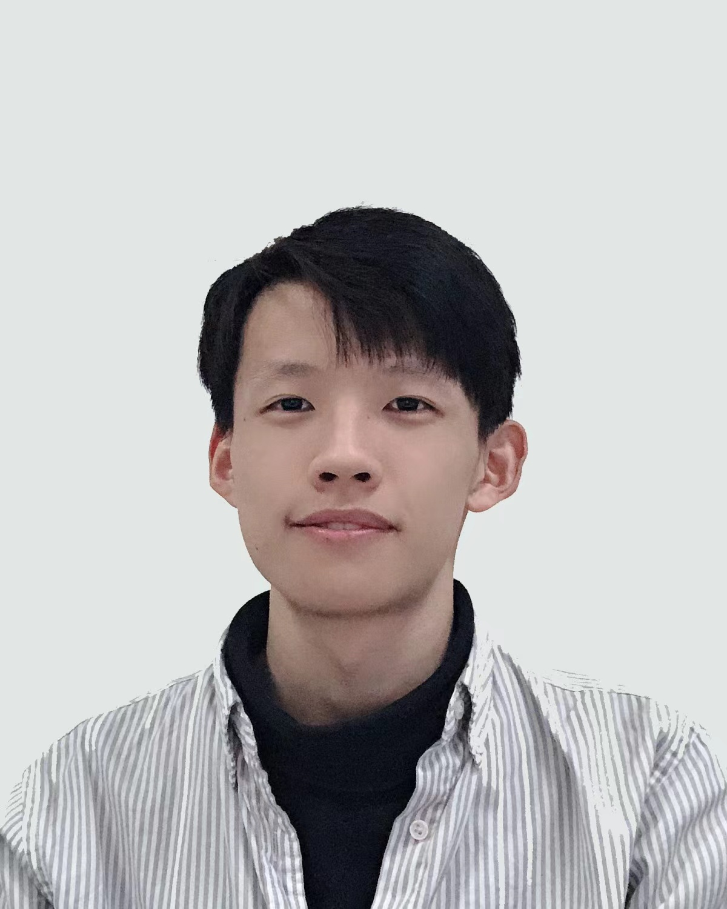

Yijun YangThrough hardships to the stars. PhD Student
|

|
I am a first-year Ph.D. student at the Hong Kong University of Science and Technology (Guangzhou) supervised by Prof. Lei Zhu. I obtained my Bachelor degree with honors in Artificial Intelligence at School of Computer Science and Technology, Shandong University in 2022. I am also working as a visiting student at The University of Cambridge advised by Dr. Angelica I. Aviles-Rivero, Dr. Shujun Wang and Prof. Carola-Bibiane Schönlieb.
My research interests mainly lie in Computer Vision, Medical Image Analysis, especially low-level vision, domain generalization.
Topic: Medical Image Analysis, especially Domain Generalization and Multi-modality Learning
Topic: Video Understanding
Yijun Yang, Shujun Wang, Lei Zhu, Pheng-Ann Heng, Lequan Yu.
Under review.